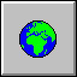

Про Web1 (чи то Web 1, чи то Web 1.0)

Джерело запиту Web1
Я проаналізував поточний рух Small Web і усвідомив, що він не випадковий. І що він не єдиний. В часи, коли відбувається масова маніпуляція інформацією за допомогою соціальних мереж Web 2.0 (наприклад, Ілоном Маском в соціальній мережі Twitter/X), перевантаження непотрібною інформацією або рекламою, що неможливо вимкнути (як в соціальний мережах Facebook та Instagram), є запит на дійсно вільний інтернет без обмежень, реклами та російської пропаганди. Також, є запит на лікування кліпового сприйняття інформації, FOMO, та зламаних дофамінових контурів як наслідок.
Про Web 2.0
Явище Web 2.0 було викликано тим, що інтернет поступово ставав популярнішим інструментом, з’явилися технології (зокрема, AJAX), і доступні потужності. Це дозволило декільком компаніям централізувати блогінг (та мікроблогінг), долучити до інтернету технічно неграмотних людей, а потім вільно використовувати приватну інформацію всіх для рекламної діяльності. “Web 2.0” це такий самий buzzword як і “AI”: вигаданий журналістами та інвесторами, що повідомляє про неіснуючу цінність.
Для користування Web1, на відміну від Web 2.0, потрібні базові знання HTML та CSS. І хоч вивчити це не складно, але вже обмежує публікацію лише тими людьми, що мають достатню нейропластичність та бажання вивчати та пробувати нове.
Про Web3 (3.0)
Наразі багато розмов про Web3 як намагання подалати проблеми Web2, але, по суті, це ускладнення системи без необхідності (всі інструменти завжди були в Web1). Та й вся інформація все одно не належить користувачеві, а провайдеру Web3, що не вирішує проблему використання (та злив) даних користувачів.